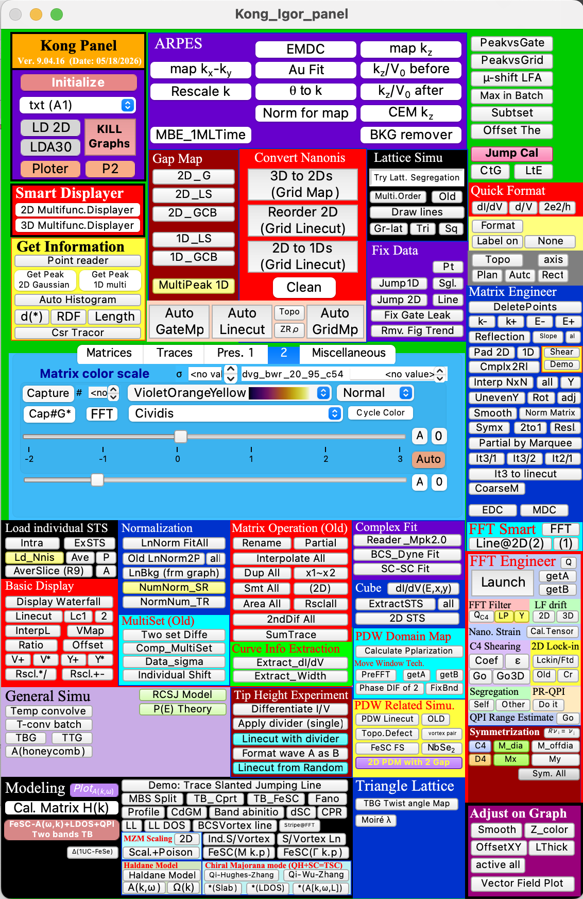

𝐊𝐎𝐍𝐆 𝐏𝐚𝐧𝐞𝐥 Documentation
Interactive guides for the Igor Pro package: browse the main panel, jump from controls to action procedures, search the function library, and inspect source-level package statistics.

Interactive guides for the Igor Pro package: browse the main panel, jump from controls to action procedures, search the function library, and inspect source-level package statistics.
